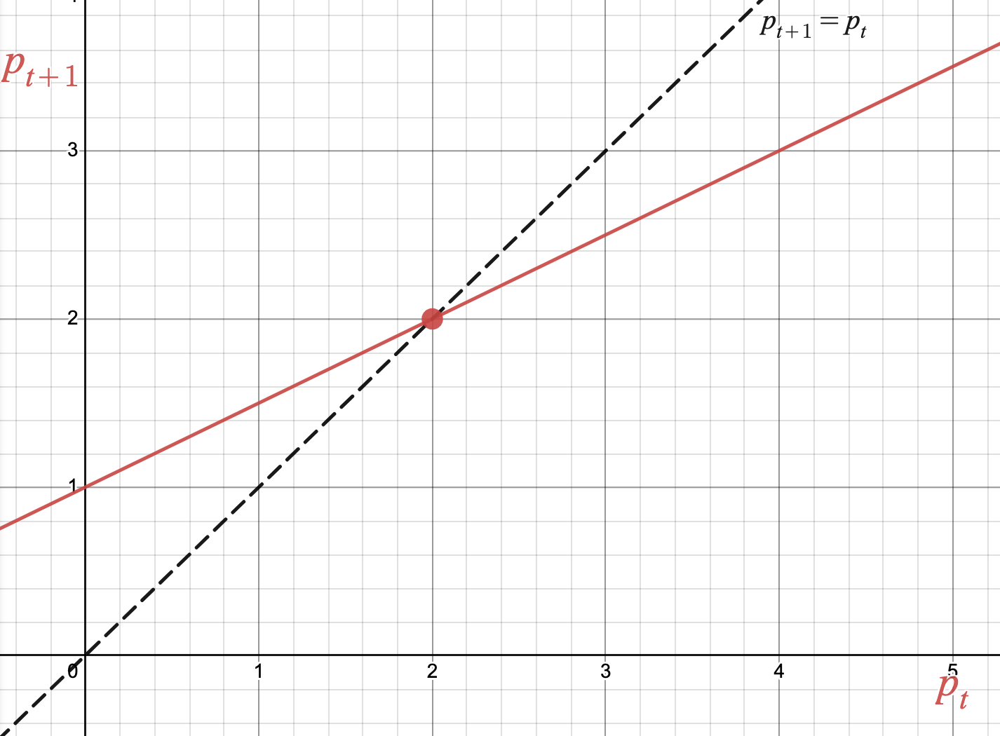

Section1.8Analyzing Discrete-Time Dynamical Systems
Motivating Questions
How can we describe the qualitative behavior of a solution function without finding the equation of the solution function explicitly?
What are equilibrium values of a DTDS and how can we find and describe them?
We ended Section 1.7 by finding explicit equations of solution functions for certain types of updating functions. In general, this is a very difficult task. It is beneficial to have other tools for describing the qualitative behavior of a solution function, especially when we can’t find the equation explicitly.
The qualitative behavior of a solution function describes how the function behaves as time goes on. Does the solution function increase or decrease for a particular initial value? Does the solution function approach a specific value? In this section we will learn a graphical tool for describing the behavior of a solution function, and how to identify important values that dictate the behavior of the system.
Warm-Up1.8.1.
\(g_{t+1}= 0.5g_t +2\)\(g_0 = 20\text{.}\)
Sketch the graph of the updating function. Identify the updating function rule to help you, and clearly label your axes.
Complete the table below using the updating function. Plot the relevant points in your table on the graph of the updating function from the previous part.
Table1.8.1.
\(t\)
\(g_t\)
\(g_{t+1}\)
\(0\)
\(1\)
\(2\)
\(3\)
Subsection1.8.1Cob-Webbing
We have seen several examples in which we create tables like Table 1.8.1 using the updating function and initial value. Cob-webbing is a method which mimics the iteration process used to create such a table on the graph of the updating function of a DTDS. Instead of producing the specific values like a table, cob-webbing is an efficient algorithm that can show us the qualitative behavior of a solution function starting from an initial value of our choosing. The cob-webbing algorithm is described below.
Cob-webbing Algorithm.
Begin with the graph of an updating function \(b_{t+1} = f(b_t)\text{,}\) the diagonal line \(b_{t+1} = b_t\text{,}\) and an initial condition \(b_0\text{.}\)
Identify \(b_0\) on the horizontal axis (\(b_t\)) of the graph of the updating function.
Travel vertically until you intersect the updating function, and draw a closed circle.
From the closed circle, travel horizontally until you intersect the diagonal line \(b_{t+1} = b_t\text{.}\)
From this point on the diagonal line, travel vertically until you intersect the updating function, and draw a closed circle.
Repeat step 3 through step 4 as many times as desired.
The output value of the closed circles that are generated on the graph of the updating function using the cob-webbing algorithm are consecutive output values of the solution function. By generating these points graphically, we can visually see how the solution function is behaving. Is it increasing or decreasing? Is it approaching a particular value?
If \(x_0=0.25\text{,}\) is the solution function increasing or deacreasing? Answer.
\(x_t\)
If \(x_0=0.25\text{,}\) is the solution function increasing/decreasing at an increasing or decreasing rate? Answer.
If \(x_0=0.25\text{,}\) is the solution function approaching a particular value? Answer.
\(x_t= 1\text{.}\)
Find an example of an initial value for which the solution function will decrease. Answer.
\(x_0 \gt 1\text{.}\)
Subsection1.8.2Equilibrium Values and Stability
In Example 1.8.2, you’ll notice that the solution function approaches the value \(x_t=1\text{,}\) regardless of what the initial condition is. This is an example of a special value in a DTDS, which we define now.
It is also common to call an equilibrium value \(b^*\) an equilibrium point, referring to the point \((b^*,b^*)\) which is on the graph of the updating function.
Another way to phrase Definition 1.8.3 is that an equilibrium value is an output value that is unchanged by the updating function. In Example 1.8.2, we can see that \(x^*=1\) is an equilibrium value because if we start cob-webbing at \(x_0 =1\text{,}\) the next output value is \(x_1 =1\text{.}\)
Equilibrium values help to separate the domain of initial values into pieces on which we can describe the general behavior of a solution function. In Example 1.8.2, \(x^*=1\) is the value to compare against to determine if the solution function will increase or decrease. If \(x_0 \gt 1\text{,}\) the solution function will decrease. If \(x_0 \lt 1\text{,}\) the solution function will increase.
Equilibrium values often have significant meaning in the context of the system being modeled. For example, if the updating function in Example 1.8.2 is modeling a population with respect to time, \(x^*=1\) may represent a carrying capacity of that system.
Given an updating function, we can find equilibrium values algebraically or graphically, depending on how the updating function is represented.
Example1.8.5.Finding Equilibria.
Let \(p_{t+1} = 0.5p_t + 1\text{.}\)
Finding Equilibria Algebraically. An equilibrium value is a value \(p^*\) that is unchanged by the updating function. That is, \(p^*\) is an equilibrium value if
This shows that \(p^*=2\) is an equilibrium value of the system, which we can verify by computing \(0.5\cdot \mathbf{2} + 1 = \mathbf{2}\text{.}\)
Finding Equilibria Graphically. We can graph the updating function \(p_{t+1} = 0.5p_t + 1\) by recognizing the updating function rule as \(f(x)=0.5x+1\text{:}\)

We graph the updating function along with the diagonal line \(p_{t+1}=p_t\) because graphically, a value which is unchanged by the updating function can be identified by finding an intersection point with the line \(p_{t+1}=p_t\text{.}\) We can see on the graph that the diagonal intersects the updating function at \((2,2)\text{,}\) which means \(p^*=2\) is an equilibrium value of the system.
Remark1.8.6.
Note that the updating function explored in Example 1.8.5 is the same as the one we analyzed in Example 1.7.8 when trying to use transformations to find a solution function equation explicitly. In Example 1.7.8, we used a table of iterated values to make an educated guess at what value the system was approaching in order to determine what a horizontal asymptote should be of the solution function. In Example 1.8.5, we see a more calculated way to find what a horizontal asymptote should be by calculating the equilibrium value of the system.
Activity1.8.2.
\(b_{t+1}=rb_t\text{,}\)\(r\)
Assuming \(r=2\text{,}\) find the equilibrium value(s) of this system algebraically.
Assuming \(r \neq 1\text{,}\) find the equilibrium value(s) of this system algebraically.
Sketch a graph of the updating function if \(r=2\text{.}\) Cob-web using several different initial values to describe how the solution function behaves with respect to the equilibrium value(s).
Sketch a graph of the updating function if \(r=0.5\text{.}\) Cob-web using several different initial values to describe how the solution function behaves with respect to the equilibrium value(s).
Solution functions need not always approach an equilibrium value as time goes on. We describe how a system behaves with respect to its equilibrium values with the following vocabulary:
Definition1.8.7.Stability.
Let \(p^*\) be an equilibrium value of a DTDS.
If the output values of solution functions get as close to \(p^*\) as we’d like when initial values are close to \(p^*\text{,}\) we say that \(p^*\) is a stable equilibrium value.
Otherwise, we say that \(p^*\) is an unstable equilibrium value.
Example1.8.8.Stability.
Stable Equilibrium Value. For the updating function \(x_{t+1} = f(x_t)\) below, the value \(x^*=1\) is a stable equilibrium value. Change the initial value to different numbers above and below the equilibrium value, and notice that in all cases, the solution function tends towards the equilibrium value as time goes on.
Unstable Equilibrium Value. For the updating function \(x_{t+1} = f(x_t)\) below, the value \(x^*=1\) is an unstable equilibrium value. Change the initial value to different numbers above and below the equilibrium value, and notice the solution function does not always tend towards the equilibrium value as time goes on.
Subsection1.8.3Summary
Question1.8.9.
How can we describe the qualitative behavior of a solution function without finding the equation of the solution function explicitly?
Answer.
We can describe the qualitative behavior of a solution function by cob-webbing on the graph of the updating function. The series of points generated by cob-webbing show us whether a solution function is increasing or decreasing, how it is increasing or decreasing, and if the solution function is approaching a particular value as time goes on.
Question1.8.10.
What are equilibrium values of a DTDS and how can we find and describe them?
Answer.
Equilibrium values are values that are unchanged by the updating function. We can find equilibrium values algebraically using the equation of the updating function or graphically using the graph of the updating function. We can categorize equilibrium values as stable or unstable based on how solution functions behave with initial values that are close to the equilibrium value.
Exercises1.8.4Exercises
1.
A linear updating function is an updating function whose updating function rule is a linear function. Is it possible for a DTDS with a linear updating function to have exactly two equilibrium values? Explain how you know.
2.
Give an example of the graph of an updating function that has \(2\) stable equilibrium values and \(1\) unstable equilibrium value. Use cob-webbing to illustrate why your example works.